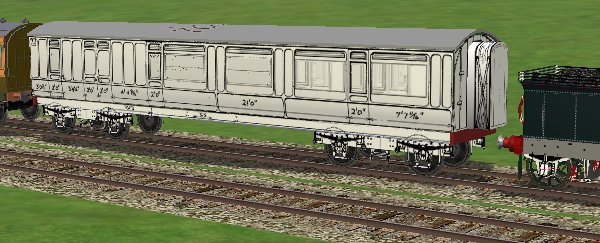

A Coach Made With GMax
by Richard Osborne
Chapter 9: Export To MSTS
OK, we've seen it in SView, let's see it in MSTS. Hopefully we'll avoid the dreaded send/don't send screen. This normally means a fault with the texture files. For MSTS every polygon of every part must be textured, this is why we textured as we made the coach. Gmax doesn't show untextured polygons, you can isolate any in SView - they'll show white. Go to 'edit' 'textures' to check the texture files. Turn them all off; the entire model will be white. Turn them back on, any polys still white are untextured.
Gmax will only export an .s file, it doesn't handle the associated files. The .sd & .wag files have to be written. I wouldn't expect you to write them from scratch; it's much simpler to alter existing files. The whole business of wagon physics is shrouded in mystery & magic. For copywrite reasons I'll suggest you alter one of the default files, being realistic find a coach similar to your needs & alter it. Some people have automatic couplers, some chain, some air brakes, some vacuum. British stock of this age should have vacuum brakes.
Inside your MSTS/trains/trainset subdirectory you'll need a new folder 'lnwrcoach'. Copy the .ace & .s files from the project directory, rename the .s file to 'lnwr50brk1'. Naming your file is a bit of a pain, I found myself with yet another corr_3; the next email I opened was from someone suggesting a better way of naming. Subsequently after a little headscratching I use the company first, designer second, coach type next. Corr_3 became BRS_bull_corr3 for British Rail Southern_Bulleid_corridor_3rdclass. For this coach I used .wag & .sd files from one of my LSWR coaches. These were renamed lnwr50brk1 for LNWR_50ft_brake1st. Open both files, alter the .s file names & alter the lengths.
All being well MSTS Activity Editor will read your file. Open one of your consists & add your coach.

Look for the most important things first, does it sit well? Do the wheels & bogies rotate properly? You can see anything which needs to be amended; the windows are too opaque, the coach needs to be lifted for default rails etc.
The main problems have all been solved if we can export to MSTS. 98% of the work has been done; everything from now on is just detail. There might be need to join parts to cut the number of parts down. The only proviso from now on is to keep the polygon count under control, handrails could have as many polys as the coach itself. At the moment I won't discuss Levels of Detail - the coach isn't detailed enough. When I've finished my coach I'll write another chapter. In the meantime you have enough to make a coach in Gmax. There's nothing like success, after a few coaches try a loco. You'll be surprised how quick it can be. The main thing is that you've tamed a difficult program - above all enjoy yourself, it's only a game.